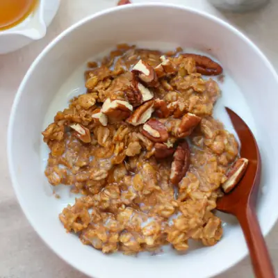

Pumpkin Oatmeal

Ingredients
- 1 cup rolled oats (100g)
- 3/4 cup milk of choice
- 3/4 cup water
- 1/2 cup pumpkin puree (120g)
- 1 teaspoon pumpkin pie spice (or cinnamon)
- 1/4 teaspoon salt
- 1-2 tablespoons maple syrup or honey
- nuts or seeds
- chocolate chips
- Greek or regular yogurt
- crushed graham crackers
- fresh or dried fruits
Steps
- To a medium sauce pan, add all the ingredients and bring to a boil. Reduce heat and simmer, stirring occasionally, for 8-10 minutes, until the oats are softened.
- Serve warm, topped with your favorite toppings.
Recipe by Min Kwon · Kidfriendly Meals, from MJ and Hungryman. Saved here for personal use; the original has the full notes, tips and photos. Open original